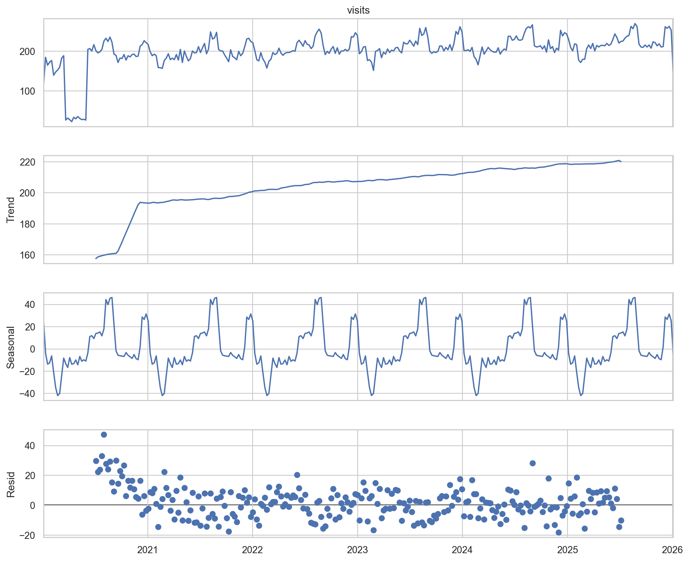
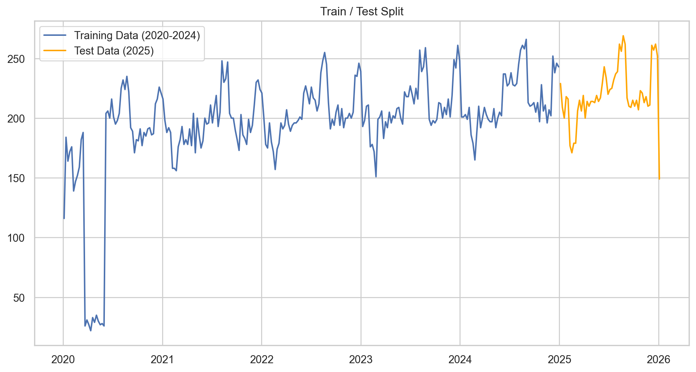
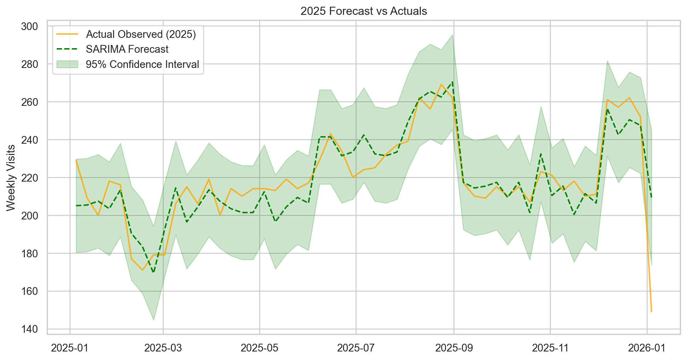

Time-series forecasting of dental visit volumes using Python, Statsmodels, and synthetic data generation.
Author
E. Pitzer
Published
August 31, 2026
Introduction
This project creates a random dataset of ‘Oregon Patients’ so that we can analyze seasonality and create a model to predict / forecast clinic utilization rates.
Python is used to create the initial set of random dummy data and the ‘pandas’ and ‘numpy’ packages are used for later data cleaning and organization.
NoteProject Context
This analysis uses synthetic data engineered to mimic real-world HIPAA constraints. To learn more about how the data was generated and the structural assumptions used (including the COVID-19 shock parameters), view the Project Methodology page.
1. Data Ingestion & preprocessing
First, we load the synthetic transaction data. We ensure dates are parsed correctly and set as the index, which is a requirement for most time-series libraries.
Code
import pandas as pdimport numpy as npimport matplotlib.pyplot as pltimport seaborn as snsimport statsmodels.api as sm# Set plot style for professional chartssns.set_theme(style="whitegrid")# Load data (relative path from this .qmd file)df = pd.read_csv("data/raw/clinic_visits_2020_2025.csv", parse_dates=['date'])# Set date as indexdf.set_index('date', inplace=True)# Previewprint(f"Data Range: {df.index.min().date()} to {df.index.max().date()}")df.head()
Data Range: 2020-01-01 to 2025-12-31
visits
date
2020-01-01
36
2020-01-02
35
2020-01-03
30
2020-01-04
15
2020-01-05
0
2. Exploratory Data Analysis (EDA)
Visualizing the Daily Volatility
One immediate challenge with clinic data is the “sawtooth” pattern caused by weekends (clinics are often closed or have reduced hours on weekends).
To understand the long-term trends and seasonality better, it is often helpful to aggregate daily data into Weekly Sums. This smooths out the weekend dips and highlights the actual business trajectory.
We can clearly see the external shock in early 2020, followed by a recovery and a steady growth trend with annual seasonality (peaks in December and August).
3. Time Series Decomposition
We use statsmodels to decompose the weekly time series into three components:
Trend: The underlying growth.
Seasonal: The recurring annual pattern.
Residual: The random noise left over.
Code
from statsmodels.tsa.seasonal import seasonal_decompose# Decompose the weekly data# period=52 implies an annual cycle (52 weeks per year)decomposition = seasonal_decompose(df_weekly, model='additive', period=52)fig = decomposition.plot()fig.set_size_inches(12, 10)plt.show()

4. Forecasting with SARIMA
To predict future volumes, we will use a SARIMA model.
Data Preparation: Train/Test Split
A crucial step in Data Science is validating the model against unseen data. We will split our data into: - Training Set: 2020–2024 (The model learns from this). - Test Set: 2025 (We hide this from the model and use it to score accuracy).
Why Weekly? Forecasting daily data is often too noisy for strategic planning. Aggregating to a Weekly level provides a clearer signal for staffing and resource allocation.
Code
# 1. Aggregate to Weekly Datay = df['visits'].resample('W').sum()# 2. Split into Train and Testtrain = y[:'2024-12-31']test = y['2025-01-01':]print(f"Training Weeks: {len(train)}")print(f"Test Weeks: {len(test)}")# Visualize the splitplt.figure(figsize=(12, 6))plt.plot(train, label='Training Data (2020-2024)')plt.plot(test, label='Test Data (2025)', color='orange')plt.title('Train / Test Split')plt.legend()plt.show()
Training Weeks: 261
Test Weeks: 53

Model Training
We define a SARIMA model with parameters \((1, 1, 1) \times (1, 1, 0, 52)\).
The 52 indicates an annual seasonal cycle (52 weeks/year).This allows the model to look back at the same week last year to inform the forecast.
(Note: In a production environment, we would use grid search (AutoARIMA) to optimize these parameters, but for this case study, we manually specify them based on our decomposition analysis.)
Code
from statsmodels.tsa.statespace.sarimax import SARIMAX# Define the model# order=(p,d,q), seasonal_order=(P,D,Q,s)model = SARIMAX(train, order=(1, 1, 1), seasonal_order=(1, 1, 0, 52), enforce_stationarity=False, enforce_invertibility=False)# Fit the modelresults = model.fit(disp=False)# Summary of the modelprint(results.summary().tables[1])
Now we ask the model to predict 2025 and compare it to what actually happened (the synthetic test set).
Code
# Generate predictions for the Test period# get_prediction expects integer steps or date indicespred = results.get_prediction(start=test.index[0], end=test.index[-1], dynamic=False)pred_ci = pred.conf_int() # Confidence Intervals# Plotting Actual vs Predictedplt.figure(figsize=(12, 6))# Plot Observed Data (Test Set)plt.plot(test.index, test, label='Actual Observed (2025)', color='orange', alpha=0.8)# Plot Predicted Dataplt.plot(pred.predicted_mean.index, pred.predicted_mean, label='SARIMA Forecast', color='green', linestyle='--')# Plot Confidence Interval (The "Cone of Uncertainty")plt.fill_between(pred_ci.index, pred_ci.iloc[:, 0], pred_ci.iloc[:, 1], color='green', alpha=0.2, label='95% Confidence Interval')plt.title('2025 Forecast vs Actuals')plt.ylabel('Weekly Visits')plt.legend()plt.show()# Calculate Accuracy Metricsfrom sklearn.metrics import mean_absolute_errormae = mean_absolute_error(test, pred.predicted_mean)mean_val = test.mean()print(f"Mean Absolute Error (MAE): {mae:.2f}")print(f"Forecast Error relative to Mean: {(mae/mean_val)*100:.2f}%")

Mean Absolute Error (MAE): 9.09
Forecast Error relative to Mean: 4.14%
Result:
The model successfully captured the seasonal peaks in August and December, maintaining a low error rate relative to the weekly volume.
5. Strategic Recommendations
Based on the SARIMA forecast and historical decomposition, we propose the following data-driven actions for the Clinic Director:
1. Dynamic Staffing for Peak Seasons
The Insight: Patient volume consistently surges by 20-25% in August (Back-to-School) and December (End-of-Year Benefits).
The Action: Schedule auxiliary nursing staff and potential locum tenens providers 6 weeks in advance of these peaks. Reduce elective staff leave during these windows.
2. Budgeting for Growth
The Insight: The clinic is experiencing a steady 3% annual growth rate, independent of seasonal fluctuations.
The Action: Operational budgets for consumables (PPE, dental supplies) and administrative overhead should be indexed to this 3% growth baseline for the 2026 fiscal year.
3. Resilience Planning
The Insight: The model identifies structural breaks (like the 2020 shock).
The Action: While the forecast predicts stability, we recommend maintaining a cash reserve equivalent to 2 months of operating expenses to buffer against unforeseen external shocks similar to the Q1 2020 variance.
Analysis executed by Ethan Pitzer using Python & Quarto.